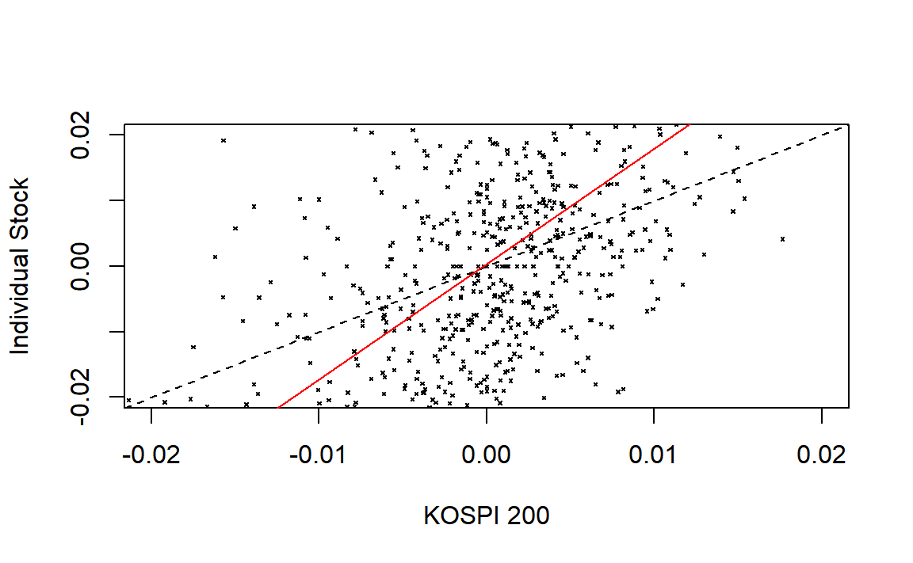
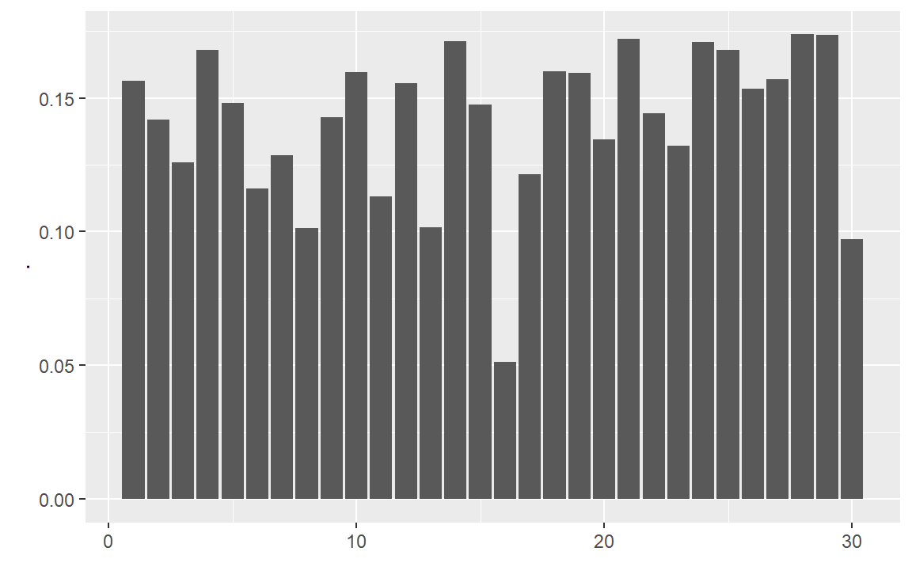
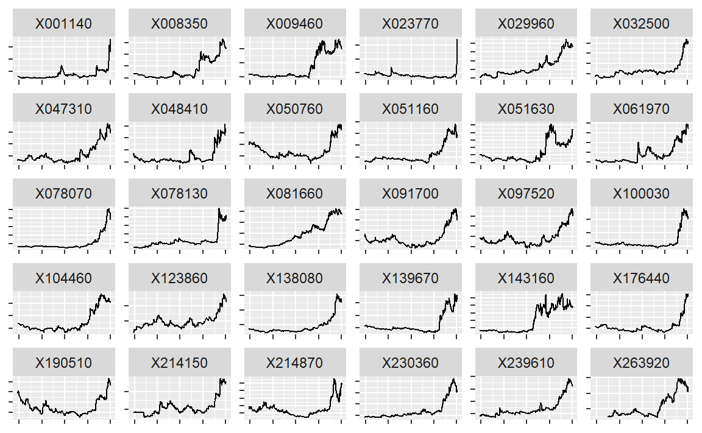
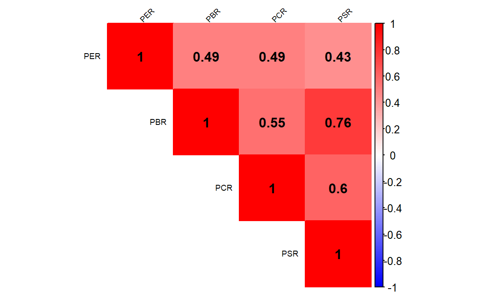

Chapter 9 퀀트 전략을 이용한 종목선정 (기본)
투자에 필요한 주가, 재무제표, 가치지표 데이터가 준비되었다면 퀀트 전략을 활용하여 투자하고자 하는 종목을 선정해야 합니다.
퀀트 투자는 크게 포트폴리오 운용 전략과 트레이딩 전략으로 나눌 수 있습니다. 포트폴트폴리오 운용 전략의 경우 과거 주식 시장을 분석하여 좋은 주식의 기준을 찾아낸 후 해당 기준에 만족하는 종목을 매수하거나, 이와 반대에 있는 나쁜 주식을 공매도 하기도 합니다. 투자의 속도가 느리며, 다수의 종목을 하나의 포트폴리오로 구성하여 운용하는 특징이 있습니다. 반면 트레이딩 전략의 경우, 단기간에 발생되는 주식의 움직임을 연구한 후 예측하여, 매수 혹은 매도하는 전략입니다. 투자의 속도가 빠르며 소수의 종목을 대상으로 합니다.
| 기준 | 포트폴리오 운용 전략 | 트레이딩 전략 |
|---|---|---|
| 투자철학 | 규칙에 기반한 투자 | 규칙에 기반한 투자 |
| 투자목적 | 좋은 주식을 매수 | 좋은 시점을 매수 |
| 학문적 기반 | 경제학, 통계학 등 | 통계학, 공학, 정보처리 등 |
| 투자의 속도 | 느림 | 빠름 |
이 중 본 책에서는 포트폴리오에 기반한 운용 전략에 대해 다루도록 합니다. 주식의 수익률에 영향을 미치는 요소를 팩터Factor라 합니다. 즉 팩터의 강도가 양인 종목들로 구성한 포트폴리오의 경우 향후 수익률이 높을 것으로 예상되며, 팩터의 강도가 음인 종목들로 구성한 포트폴리오의 경우 반대로 향후 수익률이 낮을 것으로 예상됩니다.
팩터에 대한 연구는 학자들에 의해 오랫동안 진행되어 왔지만, 일반 투자자들이 이러한 논문을 모두 찾아보고 연구하는 것은 사실상 불가능에 가깝습니다. 그러나 최근에는 스마트베타라는 이름으로 팩터 투자가 대중화되고 있습니다. 최근 유행하고 있는 스마트베타 ETF의 경우 팩터를 기준으로 포트폴리오를 구성한 상품으로써, 학계나 실무에서 검증된 팩터 전략을 기반으로 합니다.
해당 상품들의 홈페이지나 투자설명서에는 종목 선정 기준에 대해 자세히 나와있으므로 이는 매우 훌륭한 투자 전략이기도 합니다. 따라서 스마트베타 ETF에 나와있는 투자 전략을 자세히 분석하는 것만으로도 훌륭한 퀀트 투자 전략을 만들 수 있습니다.

그림 2.1: 스마트베타 ETF 전략 예시
본 장에서는 투자에 많이 활용되는 기본적인 팩터에 대해 알아보고, 우리가 구한 데이터를 바탕으로 각 팩터 별 투자 종목을 선택하는 방법에 대해 알아보도록 하겠습니다.
아울러 본 책에서 각종 모델을 통해 나온 종목들은, 데이터를 받은 시점에서의 종목이며 매수 추천은 아님을 밝힙니다.
9.1 베타 이해하기
투자자들이라면 누구나 한번은 들어봤을만한 용어가 베타Beta 입니다. 기본적으로 개별 주식의 수익률에 가장 크게 영향을 주는 요소는 주식시장의 움직임일수 밖에 없습니다. 아무리 좋은 주식도 주식시장이 폭락한다면 같이 떨어지며, 아무리 나쁜 주식도 주식시장이 상승한다면 대부분 같이 오르기 마련입니다.
개별 주식이 전체 주식시장의 변동에 반응하는 정도를 나타낸 값이 베타입니다. 베타가 1이라는 뜻은 주식시장과 움직임이 정확히 같다는 뜻으로써, 시장 그 자체를 나타냅니다. 베타가 1.5라는 뜻은 주식시장이 수익률이 +1% 일 때 개별 주식의 수익률은 +1.5%, 반대로 주식시장의 수익률이 -1% 일 때 개별 주식의 수익률은 -1.5% 움직인다는 뜻입니다. 반면 베타가 0.5라면 주식시장 수익률의 절반 정도만이 움직이게 됩니다.
| 베타 | 주식시장이 +1% 일 경우 | 주식시장이 -1% 일 경우 |
|---|---|---|
| 0.5 | +0.5% | -0.5% |
| 1.0 | +1.0% | -1.0% |
| 1.5 | +1.5% | -1.5% |
이처럼 베타가 큰 주식은 주식시장보다 수익률의 움직임이 크며, 반대로 베타가 낮은 주식은 주식시장보다 수익률의 움직임이 작습니다. 따라서 일반적으로 상승장이 기대될 때는 베타가 큰 주식에, 하락장일이 기대될 때는 베타가 낮은 주식에 투자하는 것이 좋습니다.
주식시장에서의 베타는 통계학의 회귀분석모형에서 기울기를 나타내는 베타와 정확히 의미가 같습니다. 회귀분석모형은 \(y = a + bx\) 형태로 나타나며, x의 변화에 따른 y의 변화의 기울기가 회귀계수인 b입니다. 이를 주식에 적용한 모형이 자산가격결정모형(CAPM: Capital Asset Pricing Model)이며, 그 식은 다음과 같습니다.
\[회귀분석모형: y = a + bx\] \[자산가격결정모형: R_i = R_f + \beta_i\times[R_m - R_f]\]
먼저 회귀분석모형의 상수항인 a에 해당하는 부분은 무위험 수익률을 나타내는 \(R_f\)입니다. 독립변수인 x에 해당하는 부분은 무위험 수익률 대비 주식 시장의 초과 수익률을 나타내는 시장위험 프리미엄인 \(R_m - R_f\)입니다. 종속변수인 y에 해당하는 부분은 개별주식의 수익률을 나타내는 \(R_i\)이며, 최종적으로 회귀계수인 b에 해당하는 부분은 개별 주식의 베타입니다.
| 구분 | 회귀분석모형 | 자산가격결정모형 |
|---|---|---|
| 상수항 | a | \(R_f\) (무위험 수익률) |
| 독립변수 | x | \(R_m - R_f\) (시장위험 프리미엄) |
| 종속변수 | y | \(R_i\) (개별주식의 수익률) |
| 회귀계수 | b | \(\beta_i\) (개별주식의 베타) |
통계학에서 회귀계수는 \(\beta = \frac{cov(x,y)}{\sigma_x^2}\) 형태로 구할 수 있으며, x와 y에 각각 시장수익률과 개별주식의 수익률을 대입할 경우 개별주식의 베타는 \(\beta_i= \rho(i,m) \times\frac{\sigma_i}{\sigma_m}\) 형태로 구할 수 있습니다. 그러나 이러한 수식을 모르더라도 R에서는 간단히 베타를 구할 수 있습니다.
9.1.1 베타 계산하기
베타를 구하는 방법을 알아보기 위해 주식시장에 대한 대용치로 KOSPI 200 ETF, 개별주식으로는 전통적 고베타주인 증권주를 이용하겠습니다.
library(quantmod)
library(PerformanceAnalytics)
library(magrittr)
symbols = c('102110.KS', '039490.KS')
getSymbols(symbols)## [1] "102110.KS" "039490.KS"prices = do.call(cbind,
lapply(symbols, function(x)Cl(get(x))))
ret = Return.calculate(prices)
ret = ret['2016-01::2018-12']- KOSPI 200 ETF인 TIGER 200(102110.KS), 증권주인 키움증권(039490.KS)의 티커를 입력합니다.
getSymbols()함수를 이용하여 해당 티커들의 데이터를 다운로드 받습니다.lapply()함수 내에Cl()과get()함수를 사용하여 종가에 해당하는 데이터만 추출하며, 리스트 형태의 데이터를 열의 형태로 묶어주기 위해do.call()함수와cbind()함수를 사용해 줍니다.Return.calculate()함수를 통해 수익률을 계산해 줍니다.- xts 형식의 데이터는 대괄호 속에 [‘시작일자::종료일자’]와 같은 형태로, 원하는 날짜를 편리하게 선택할 수 있으며, 위에서는 2016년 1월부터 2018년 12월 까지 데이터를 선택합니다.
rm = ret[, 1]
ri = ret[, 2]
reg = lm(ri ~ rm)
summary(reg)##
## Call:
## lm(formula = ri ~ rm)
##
## Residuals:
## Min 1Q Median 3Q Max
## -0.06890 -0.01295 -0.00172 0.01082 0.09542
##
## Coefficients:
## Estimate Std. Error t value Pr(>|t|)
## (Intercept) 0.000373 0.000723 0.52 0.61
## rm 1.761433 0.090739 19.41 <2e-16 ***
## ---
## Signif. codes: 0 '***' 0.001 '**' 0.01 '*' 0.05 '.' 0.1 ' ' 1
##
## Residual standard error: 0.0195 on 727 degrees of freedom
## (2 observations deleted due to missingness)
## Multiple R-squared: 0.341, Adjusted R-squared: 0.34
## F-statistic: 377 on 1 and 727 DF, p-value: <2e-16증권주를 대상으로 베타를 구하기 위한 회귀분석을 실시합니다. 자산가격결정모형의 수식인 \(R_i = R_f + \beta_i \times [R_m - R_f]\) 에서 편의를 위해 무위험 수익률인 \(R_f\)를 0으로 가정하면, \(R_i = \beta_i \times R_m\)의 형태로 나타낼 수 있습니다. 이 중 \(R_m\)는 독립변수인 주식시장의 수익률을, \(R_i\)는 종속변수인 개별주식의 수익률을 의미합니다.
- 독립변수는 첫번째 열인 KOSPI 200 ETF의 수익률을 선택하며, 종속변수는 두번째 열인 증권주의 수익률을 선택합니다.
lm()함수를 통해 손쉽게 선형회귀분석을 실시할 수 있으며, 회귀분석의 결과를 reg 변수에 저장해줍니다.summary()함수는 데이터의 요약 정보를 나타내며, 해당 예시에서는 회귀분석결과에 대한 정보를 보여줍니다.
회귀분석의 결과 중 가장 중요한 부분은 계수를 나타내는 Coefficients 부분입니다. Intercept 부분은 회귀분석의 상수항에 해당하는 부분으로써, 값이 거의 0에 가깝고 t밸류 또한 매우 작아 유의하지 않음이 보입니다. 우리가 원하는 베타에 해당하는 부분은 x의 Estimate 부분으로써, 베타값이 1.76으로 증권주의 특성인 고베타주임이 확인되며, t밸류 또한 19.41로 매우 유의한 결과입니다. 조정된 결정계수(Adjusted R-square)는 0.34를 보입니다.
9.1.2 베타 시각화
다음으로 구해진 베타를 그림으로 표현해보도록 하겠습니다.
plot(as.numeric(rm), as.numeric(ri), pch = 4, cex = 0.3,
xlab = "KOSPI 200", ylab = "Individual Stock",
xlim = c(-0.02, 0.02), ylim = c(-0.02, 0.02))
abline(a = 0, b = 1, lty = 2)
abline(reg, col = 'red')
plot()함수를 통해 그림을 그려주며, x축과 y축에 주식시장 수익률과 개별주식 수익률을 입력합니다. pch는 점들의 모양을, cex는 점들의 크기를 나타내며, xlab과 ylab은 각각 x축과 y축에 들어갈 문구를 나타냅니다. xlim과 ylim은 x축과 y축의 최소 및 최대 범위를 지정해줍니다.- 첫번째
abline()에서 a는 상수, b는 직선의 기울기, lty는 선의 유형을 나타냅니다. 이를 통해 기울기, 즉 베타가 1일 경우의 선을 점선으로 표현합니다. - 두번째
abline()에 회귀분석 결과를 입력해주면 자동적으로 회귀식을 그려줍니다.
검은색의 점선이 기울기가 1인 경우이며, 붉은색의 직선이 증권주의 회귀분석결과를 나타냅니다. 기울기가 1보다 훨씬 가파름이 확인되며, 즉 베타가 1보다 크다는 사실을 알 수 있습니다.
9.2 저변동성 전략
금융 시장에서 변동성은 수익률이 움직이는 정도로써, 일반적으로 표준편차가 사용됩니다. 표준편차는 자료가 평균을 중심으로 얼마나 퍼져 있는지를 나타내는 수치로써, 수식은 다음과 같습니다.
\[\sigma = \sqrt{\frac{\sum_{i=1}^{n}{(x_i - \bar{x})^2}}{n-1}}\]
관측값의 개수가 작을 경우에는 수식에 대입하여 계산하는 것이 가능하지만, 관측값이 수백 혹은 수천개로 늘어날 경우 컴퓨터를 이용하지 않고 계산하는 것은 사실상 불가능합니다. R에서는 복잡한 계산과정 없이 sd() 함수를 이용하여 간단하게 표준편차를 계산할 수 있습니다.
example = c(85, 76, 73, 80, 72)
sd(example)## [1] 5.357개별 주식의 표준편차를 측정할 때는 주식의 가격이 아닌 수익률로 계산해야 합니다. 수익률의 표준편차가 크다는 의미는 수익률이 위 아래로 많이 움직여 위험한 종목으로 여겨집니다. 반면, 표준편차가 작다는 의미는 수익률의 움직임이 적어 상대적으로 안전한 종목으로 여겨집니다.
전통적 금융 이론에서는 수익률의 변동성이 클수록 위험이 크고, 이런 위험에 대한 보상으로 기대수익률이 높아야 한다고 보았습니다. 따라서 고변동성 종목의 기대수익률이 크고, 저변동성 종목의 기대수익률이 낮은 고위험 고수익이 당연한 믿음이었습니다. 그러나 현실에서는 오히려 변동성이 낮은 종목들의 수익률이 변동성이 높은 종목들의 수익률 보다 높은, 저변동성 효과가 발견되고 있습니다. 이러한 저변동성 효과가 발생하는 원인으로는 여러 가설이 있습니다.
- 투자자들은 대체로 자신의 능력을 과신하는 경향이 있으며, 복권과 같이 큰 수익을 가져다 주는 고변동성 주식을 선호하는 경향이 있습니다. 이러한 결과로 고변동성 주식은 과대 평가되어 수익률이 낮은 반면, 과소 평가된 저변동성 주식들은 높은 수익률을 보이게 됩니다.
- 대부분 기관투자가들이 레버리지 투자가 되지 않는 상황에서, 벤치마크 대비 높은 성과를 얻기 위해 고변동성 주식에 투자하는 경향이 있으며, 이 또한 고변동성 주식이 과대 평가되는 결과로 이어집니다.
- 시장의 상승과 하락이 반복됨에 따라 고변동성 주식이 변동성 손실(Volatility Drag)로 인해 수익률이 하락하게 되는 이유도 있습니다.
주식의 위험은 변동성뿐만 아니라 베타 등 여러 지표로도 측정할 수 있습니다. 저변동성 효과와 비슷하게 고유변동성이 낮은 주식의 수익률이 높은 저고유변동성 효과, 베타가 낮은 주식의 수익률이 오히려 높은 저베타 효과도 발견되고 있으며, 이러한 효과들을 합쳐 저위험 효과로 부르기도 합니다.
9.2.1 저변동성 포트폴리오 구하기: 일간 기준
먼저 최근 1년 일간 수익률 기준 변동성이 낮은 30 종목을 선택하도록 하겠습니다.
library(stringr)
library(xts)
library(PerformanceAnalytics)
library(magrittr)
library(ggplot2)
library(dplyr)
KOR_price = read.csv('data/KOR_price.csv', row.names = 1,
stringsAsFactors = FALSE) %>% as.xts()
KOR_ticker = read.csv('data/KOR_ticker.csv', row.names = 1,
stringsAsFactors = FALSE)
KOR_ticker$'종목코드' =
str_pad(KOR_ticker$'종목코드', 6, 'left', 0)
ret = Return.calculate(KOR_price)
std_12m_daily = xts::last(ret, 252) %>% apply(., 2, sd) %>%
multiply_by(sqrt(252))- 저장해둔 가격 정보와 티커 정보를 불러오도록 하며, 가격 정보의 경우
as.xts()함수를 통해 xts 형태로 변경해주도록 합니다. Return.calculate()함수를 통해 수익률을 구합니다.last()함수는 마지막 n개 데이터를 선택해주는 함수이며, 1년 영업일 기준인 252개 데이터를 선택합니다.dplyr패키지의last()함수와 이름이 같으므로,xts::last()형식을 통해 xts 패키지의 함수임을 정의해줍니다.apply()함수를 통해 sd 즉 변동성을 계산해주며, 연율화를 해주기 위해multiply_by()함수를 통해 \(\sqrt{252}\)를 곱해주도록 합니다.
std_12m_daily %>%
data.frame() %>%
ggplot(aes(x = (`.`))) +
geom_histogram(binwidth = 0.01) +
annotate("rect", xmin = -0.02, xmax = 0.02,
ymin = 0,
ymax = sum(std_12m_daily == 0, na.rm = TRUE) * 1.1,
alpha=0.3, fill="red") +
xlab(NULL)
std_12m_daily[std_12m_daily == 0] = NA
변동성을 히스토그램으로 나타내보면, 0에 위치하는 종목들이 다수 존재합니다. 해당 종목들은 최근 1년간 거래정지로 인해 가격이 변하지 않았고, 이로 인해 변동성이 없는 종목들입니다. 해당 종믁들은 NA로 처리해주도록 합니다.
std_12m_daily[rank(std_12m_daily) <= 30]## X030200 X001720 X015350 X017390 X034950 X015360 X092230 X018120 X092130
## 0.15627 0.14199 0.12591 0.16792 0.14813 0.11614 0.12852 0.10121 0.14265
## X001270 X117580 X006220 X003460 X003650 X007330 X034590 X040420 X023000
## 0.15961 0.11326 0.15551 0.10164 0.17117 0.14762 0.05139 0.12132 0.15994
## X000650 X003080 X107590 X004450 X001750 X006660 X014440 X066670 X115310
## 0.15922 0.13433 0.17215 0.14424 0.13215 0.17100 0.16803 0.15343 0.15709
## X049430 X025530 X066790
## 0.17370 0.17350 0.09720std_12m_daily[rank(std_12m_daily) <= 30] %>%
data.frame() %>%
ggplot(aes(x = rep(1:30), y = `.`)) +
geom_col() +
xlab(NULL)
rank() 함수를 통해 순위를 구할 수 있으며, R은 기본적으로 오름차순 즉 가장 낮은 값의 순위가 1이 됩니다. 따라서 변동성이 낮을수록 높은 순위가 되며, 30위 이하의 순위를 선택하면 변동성이 낮은 30 종목이 선택됩니다. 또한 ggplot() 함수를 이용해 해당 종목들의 변동성을 확인해볼 수도 있습니다.
이번에는 해당 종목들의 티커 및 종목명을 확인하도록 하겠습니다.
invest_lowvol = rank(std_12m_daily) <= 30
KOR_ticker[invest_lowvol, ] %>%
select(`종목코드`, `종목명`) %>%
mutate(`변동성` = round(std_12m_daily[invest_lowvol], 4))## 종목코드 종목명 변동성
## 1 030200 KT 0.1563
## 2 001720 신영증권 0.1420
## 3 015350 부산가스 0.1259
## 4 017390 서울가스 0.1679
## 5 034950 한국기업평가 0.1481
## 6 015360 예스코홀딩스 0.1161
## 7 092230 KPX홀딩스 0.1285
## 8 018120 진로발효 0.1012
## 9 092130 이크레더블 0.1427
## 10 001270 부국증권 0.1596
## 11 117580 대성에너지 0.1133
## 12 006220 제주은행 0.1555
## 13 003460 유화증권 0.1016
## 14 003650 미창석유 0.1712
## 15 007330 푸른저축은행 0.1476
## 16 034590 인천도시가스 0.0514
## 17 040420 정상제이엘에스 0.1213
## 18 023000 삼원강재 0.1599
## 19 000650 천일고속 0.1592
## 20 003080 성보화학 0.1343
## 21 107590 미원홀딩스 0.1721
## 22 004450 삼화왕관 0.1442
## 23 001750 한양증권 0.1321
## 24 006660 삼성공조 0.1710
## 25 014440 영보화학 0.1680
## 26 066670 디스플레이텍 0.1534
## 27 115310 인포바인 0.1571
## 28 049430 코메론 0.1737
## 29 025530 SJM홀딩스 0.1735
## 30 066790 씨씨에스 0.0972티커와 종목명, 그리고 연율화 변동성을 확인할 수 있습니다.
9.2.2 저변동성 포트폴리오 구하기: 주간 기준
이번에는 일간 변동성이 아닌 주간 변동성을 기준으로 저변동성 종목을 선택하도록 하겠습니다.
std_12m_weekly = xts::last(ret, 252) %>%
apply.weekly(Return.cumulative) %>%
apply(., 2, sd) %>% multiply_by(sqrt(52))
std_12m_weekly[std_12m_weekly == 0] = NA먼저 최근 252일 수익률울 선택한 후, apply.weekly() 함수 내 Return.cumulative를 입력하여 주간 수익률을 계산하며, 연율화를 위해 연간 주수에 해당하는 \(\sqrt{52}\)를 곱해주도록 합니다. 이 외에도 apply.monthly(), apply.yearly() 함수 등으로 일간 수익률을 월간, 연간 수익률 등으로 변환할 수 있습니다. 그 후 과정은 위와 동일합니다.
std_12m_weekly[rank(std_12m_weekly) <= 30]## X316140 X030200 X001720 X019680 X002960 X015350 X017390 X034950 X015360
## 0.15526 0.14535 0.11912 0.14722 0.13555 0.12668 0.15443 0.13875 0.09979
## X092230 X018120 X092130 X312610 X001270 X117580 X038390 X003460 X003650
## 0.11673 0.07575 0.14683 0.05745 0.16038 0.12097 0.16150 0.08612 0.14894
## X007330 X034590 X019440 X040420 X004450 X001750 X004080 X066670 X115310
## 0.15059 0.03623 0.16329 0.11287 0.11352 0.12518 0.16374 0.14154 0.12913
## X049430 X002070 X066790
## 0.13032 0.14917 0.13632invest_lowvol_weekly = rank(std_12m_weekly) <= 30
KOR_ticker[invest_lowvol_weekly, ] %>%
select(`종목코드`, `종목명`) %>%
mutate(`변동성` =
round(std_12m_weekly[invest_lowvol_weekly], 4))## 종목코드 종목명 변동성
## 1 316140 우리금융지주 0.1553
## 2 030200 KT 0.1454
## 3 001720 신영증권 0.1191
## 4 019680 대교 0.1472
## 5 002960 한국쉘석유 0.1356
## 6 015350 부산가스 0.1267
## 7 017390 서울가스 0.1544
## 8 034950 한국기업평가 0.1387
## 9 015360 예스코홀딩스 0.0998
## 10 092230 KPX홀딩스 0.1167
## 11 018120 진로발효 0.0757
## 12 092130 이크레더블 0.1468
## 13 312610 에이에프더블류 0.0575
## 14 001270 부국증권 0.1604
## 15 117580 대성에너지 0.1210
## 16 038390 레드캡투어 0.1615
## 17 003460 유화증권 0.0861
## 18 003650 미창석유 0.1489
## 19 007330 푸른저축은행 0.1506
## 20 034590 인천도시가스 0.0362
## 21 019440 세아특수강 0.1633
## 22 040420 정상제이엘에스 0.1129
## 23 004450 삼화왕관 0.1135
## 24 001750 한양증권 0.1252
## 25 004080 신흥 0.1637
## 26 066670 디스플레이텍 0.1415
## 27 115310 인포바인 0.1291
## 28 049430 코메론 0.1303
## 29 002070 남영비비안 0.1492
## 30 066790 씨씨에스 0.1363주간 수익률의 변동성이 낮은 30 종목을 선택하여 종목코드, 종목명, 연율화 변동성을 확인하도록 합니다.
intersect(KOR_ticker[invest_lowvol, '종목명'],
KOR_ticker[invest_lowvol_weekly, '종목명'])## [1] "KT" "신영증권" "부산가스" "서울가스"
## [5] "한국기업평가" "예스코홀딩스" "KPX홀딩스" "진로발효"
## [9] "이크레더블" "부국증권" "대성에너지" "유화증권"
## [13] "미창석유" "푸른저축은행" "인천도시가스" "정상제이엘에스"
## [17] "삼화왕관" "한양증권" "디스플레이텍" "인포바인"
## [21] "코메론" "씨씨에스"intersect() 함수를 통해 일간 변동성 기준과 주간 변동성 기준 모두에 포함되는 종목을 찾을 수 있습니다.
9.3 모멘텀 전략
투자에서 모멘텀이란 주가 혹은 이익의 추세로써, 상승 추세의 주식은 지속적으로 상승하며 하락 추세의 주식은 지속적으로 하락하는 현상을 말합니다. 모멘텀 현상이 발생하는 원인 중 가장 큰 이유는 투자자들의 스스로에 대한 과잉 신뢰 때문입니다. 사람들은 자신의 판단을 지지하는 정보에 대해서는 과잉 반응하는, 자신의 판단을 부정하는 정보에 대해서는 과소 반응하는 경향이 있습니다. 이러한 투자자들의 비합리성으로 인해 모멘텀 현상이 생겨나게 됩니다.
모멘텀의 종류는 크게 기업의 이익에 대한 추세를 나타내는 이익 모멘텀과, 주가의 모멘텀에 대한 가격 모멘텀이 있습니다. 또한 가격 모멘텀도 1주일 혹은 1개월 이하를 의미하는 단기 모멘텀, 3개월에서 12개월을 의미하는 중기 모멘텀, 3년에서 5년을 의미하는 장기 모멘텀이 있으며, 이중에서도 3개월에서 12개월 가격 모멘텀을 흔히 모멘텀이라 합니다.
9.3.1 모멘텀 포트폴리오 구하기: 12개월 모멘텀
먼저 최근 1년 동안의 수익률이 높은 30 종목을 선택하도록 하겠습니다.
library(stringr)
library(xts)
library(PerformanceAnalytics)
library(magrittr)
library(dplyr)
KOR_price = read.csv('data/KOR_price.csv', row.names = 1,
stringsAsFactors = FALSE) %>% as.xts()
KOR_ticker = read.csv('data/KOR_ticker.csv', row.names = 1,
stringsAsFactors = FALSE)
KOR_ticker$'종목코드' =
str_pad(KOR_ticker$'종목코드', 6, 'left', 0)
ret = Return.calculate(KOR_price) %>% xts::last(252)
ret_12m = ret %>% sapply(., function(x) {
prod(1+x) - 1
})- 가격 정보와 티커 정보를 불러온 후,
Return.calculate()함수를 통해 수익률을 계산합니다. 그 후, 최근 252일 수익률을 선택합니다. sapply()함수 내부에prod()함수를 이용하여 각 종목의 누적수익률을 계산해줍니다.
ret_12m[rank(-ret_12m) <= 30]## X032500 X214150 X078070 X048410 X230360 X239610 X061970 X078130 X097520
## 2.362 2.110 6.434 2.228 1.835 2.031 1.836 2.004 1.439
## X047310 X138080 X008350 X179900 X214870 X143160 X176440 X263920 X009460
## 1.524 4.521 1.836 1.651 2.827 2.130 2.853 2.336 1.822
## X263540 X190510 X037070 X215090 X001140 X023770 X024060 X100030 X051160
## 1.461 1.504 1.458 1.420 2.816 3.609 1.449 2.141 3.089
## X139670 X090740 X051630
## 2.930 1.437 1.775rank() 함수를 통해 순위를 구하도록 하며, 모멘텀의 경우 높을수록 좋은 내림차순으로 순위를 계산해야 하므로 수익률 앞에 마이너스(-)를 붙여주도록 합니다. 12개월 누적수익률이 높은 종목들이 선택됨이 확인됩니다.
invest_mom = rank(-ret_12m) <= 30
KOR_ticker[invest_mom, ] %>%
select(`종목코드`, `종목명`) %>%
mutate(`수익률` = round(ret_12m[invest_mom], 4))## 종목코드 종목명 수익률
## 1 032500 케이엠더블유 2.362
## 2 214150 클래시스 2.110
## 3 078070 유비쿼스홀딩스 6.434
## 4 048410 현대바이오 2.228
## 5 230360 에코마케팅 1.835
## 6 239610 에이치엘사이언스 2.031
## 7 061970 엘비세미콘 1.836
## 8 078130 국일제지 2.004
## 9 097520 엠씨넥스 1.439
## 10 047310 파워로직스 1.524
## 11 138080 오이솔루션 4.521
## 12 008350 남선알미늄 1.836
## 13 179900 유티아이 1.651
## 14 214870 뉴지랩 2.827
## 15 143160 아이디스 2.130
## 16 176440 에이치엔티 2.853
## 17 263920 블러썸엠앤씨 2.336
## 18 009460 한창제지 1.822
## 19 263540 샘코 1.461
## 20 190510 나무가 1.504
## 21 037070 파세코 1.458
## 22 215090 리퓨어유니맥스 1.420
## 23 001140 국보 2.816
## 24 023770 플레이위드 3.609
## 25 024060 흥구석유 1.449
## 26 100030 모바일리더 2.141
## 27 051160 지어소프트 3.089
## 28 139670 키네마스터 2.930
## 29 090740 연이정보통신 1.437
## 30 051630 진양화학 1.775티커와 종목명, 그리고 누적수익률을 확인할 수 있습니다.
9.3.2 모멘텀 포트폴리오 구하기: 위험조정 수익률
단순히 과거 수익률로만 모멘텀 종목을 선택할 경우, 각종 테마나 이벤트로 인한 급등으로 인해 변동성이 지나치게 높은 종목이 존재할 수도 있습니다. 누적 수익률을 변동성으로 나누어 위험을 고려해줄 경우, 이러한 종목은 제외되며 상대적으로 안정적인 모멘텀 종목을 선택할 수 있습니다.
ret = Return.calculate(KOR_price) %>% xts::last(252)
ret_12m = ret %>% sapply(., function(x) {
prod(1+x) - 1
})
std_12m = ret %>% apply(., 2, sd) %>% multiply_by(sqrt(252))
sharpe_12m = ret_12m / std_12m- 최근 1년에 해당하는 수익률을 선택합니다.
sapply()와prod()함수를 이용해 분자에 해당하는 누적수익률을 계산합니다.apply()와multiply_by()함수를 이용해 분모에 해당하는 연율화 변동성을 계산합니다.- 수익률을 변동성으로 나누어 위험조정 수익률을 계산해줍니다.
이를 통해 수익률이 높으면서 변동성이 낮은 종목을 선정할 수 있습니다.
invest_mom_sharpe = rank(-sharpe_12m) <= 30
KOR_ticker[invest_mom_sharpe, ] %>%
select(`종목코드`, `종목명`) %>%
mutate(`수익률` = round(ret_12m[invest_mom_sharpe], 2),
`변동성` = round(std_12m[invest_mom_sharpe], 2),
`위험조정 수익률` =
round(sharpe_12m[invest_mom_sharpe], 2)) %>%
as_tibble() %>%
print(n = Inf)## # A tibble: 30 x 5
## 종목코드 종목명 수익률 변동성 `위험조정 수익률`
## <chr> <chr> <dbl> <dbl> <dbl>
## 1 081660 휠라코리아 1.2 0.48 2.47
## 2 032500 케이엠더블유 2.36 0.6 3.94
## 3 091700 파트론 1.07 0.42 2.52
## 4 214150 클래시스 2.11 0.63 3.35
## 5 078070 유비쿼스홀딩스 6.43 0.68 9.53
## 6 048410 현대바이오 2.23 1.03 2.16
## 7 029960 코엔텍 1.12 0.49 2.31
## 8 230360 에코마케팅 1.83 0.64 2.85
## 9 239610 에이치엘사이언스 2.03 0.61 3.33
## 10 061970 엘비세미콘 1.84 0.87 2.11
## 11 078130 국일제지 2 0.91 2.2
## 12 097520 엠씨넥스 1.44 0.56 2.56
## 13 047310 파워로직스 1.52 0.61 2.49
## 14 138080 오이솔루션 4.52 0.63 7.19
## 15 008350 남선알미늄 1.84 0.77 2.4
## 16 123860 아나패스 1.06 0.47 2.25
## 17 214870 뉴지랩 2.83 0.66 4.29
## 18 143160 아이디스 2.13 0.85 2.5
## 19 176440 에이치엔티 2.85 0.84 3.38
## 20 263920 블러썸엠앤씨 2.34 0.84 2.79
## 21 009460 한창제지 1.82 0.78 2.33
## 22 190510 나무가 1.5 0.46 3.24
## 23 001140 국보 2.82 1.05 2.68
## 24 023770 플레이위드 3.61 0.8 4.51
## 25 100030 모바일리더 2.14 0.66 3.26
## 26 051160 지어소프트 3.09 0.85 3.63
## 27 139670 키네마스터 2.93 0.83 3.51
## 28 104460 동양피엔에프 1.09 0.43 2.52
## 29 051630 진양화학 1.77 0.83 2.13
## 30 050760 에스폴리텍 1.32 0.580 2.28티커와 종목명, 누적수익률, 변동성, 위험조정 수익률을 확인할 수 있습니다.
intersect(KOR_ticker[invest_mom, '종목명'],
KOR_ticker[invest_mom_sharpe, '종목명'])## [1] "케이엠더블유" "클래시스" "유비쿼스홀딩스"
## [4] "현대바이오" "에코마케팅" "에이치엘사이언스"
## [7] "엘비세미콘" "국일제지" "엠씨넥스"
## [10] "파워로직스" "오이솔루션" "남선알미늄"
## [13] "뉴지랩" "아이디스" "에이치엔티"
## [16] "블러썸엠앤씨" "한창제지" "나무가"
## [19] "국보" "플레이위드" "모바일리더"
## [22] "지어소프트" "키네마스터" "진양화학"intersect() 함수를 통해 단순 수익률 및 위험조정 수익률 기준 모두에 포함되는 종목을 찾을 수 있습니다. 다음 그림은 위험조정 수익률 상위 30 종목의 가격 그래프입니다.
library(xts)
library(tidyr)
library(ggplot2)
KOR_price[, invest_mom_sharpe] %>%
fortify.zoo() %>%
gather(ticker, price, -Index) %>%
ggplot(aes(x = Index, y = price)) +
geom_line() +
facet_wrap(. ~ ticker, scales = 'free') +
xlab(NULL) +
ylab(NULL) +
theme(axis.text.x=element_blank(),
axis.text.y=element_blank())
9.4 밸류 전략
가치주 효과란 내재 가치 대비 낮은 가격의 주식(저 PER, 저 PBR 등)이, 내재 가치 대비 비싼 주식보다 수익률이 높은 현상을 뜻합니다. 가치 효과가 발생하는 원인에 대한 이론은 다음가 같습니다.
- 위험한 기업은 시장에서 상대적으로 낮은 가격에 거래되며, 이러한 위험을 감당하는 대가로 수익이 발생
- 투자자들의 성장주에 대한 과잉 반응으로 인해 가치주는 시장에서 소외되며, 제자리를 찾아가는 과정에서 수익이 발생
기업의 가치를 나타내는 지표는 굉장히 많지만, 일반적으로 PER, PBR, PCR, PSR가 많이 사용됩니다.
9.4.1 밸류 포트폴리오 구하기: 저 PBR
먼저 기업의 가치 여부를 판단할 때 가장 많이 사용되는 지표인 PBR을 이용한 포트폴리오를 구성하도록 하겠습니다.
library(stringr)
library(ggplot2)
library(dplyr)
KOR_value = read.csv('data/KOR_value.csv', row.names = 1,
stringsAsFactors = FALSE)
KOR_ticker = read.csv('data/KOR_ticker.csv', row.names = 1,
stringsAsFactors = FALSE)
KOR_ticker$'종목코드' =
str_pad(KOR_ticker$'종목코드', 6, 'left', 0)
invest_pbr = rank(KOR_value$PBR) <= 30
KOR_ticker[invest_pbr, ] %>%
select(`종목코드`, `종목명`) %>%
mutate(`PBR` = round(KOR_value[invest_pbr, 'PBR'], 4))## 종목코드 종목명 PBR
## 1 088350 한화생명 0.2318
## 2 000880 한화 0.1212
## 3 034020 두산중공업 0.2028
## 4 006120 SK디스커버리 0.2315
## 5 058650 세아홀딩스 0.1228
## 6 032190 다우데이타 0.1375
## 7 005720 넥센 0.1834
## 8 003300 한일홀딩스 0.1856
## 9 001940 KISCO홀딩스 0.2044
## 10 002030 아세아 0.1773
## 11 036530 S&T홀딩스 0.1665
## 12 092230 KPX홀딩스 0.2199
## 13 003030 세아제강지주 0.1788
## 14 000140 하이트진로홀딩스 0.2080
## 15 033160 엠케이전자 0.2107
## 16 035080 인터파크홀딩스 0.1895
## 17 009200 무림페이퍼 0.1951
## 18 007860 서연 0.1151
## 19 002300 한국제지 0.1950
## 20 005010 휴스틸 0.2328
## 21 040610 SG&G 0.1291
## 22 025530 SJM홀딩스 0.2030
## 23 031980 피에스케이홀딩스 0.1797
## 24 006200 한국전자홀딩스 0.1420
## 25 000950 전방 0.2298
## 26 037400 우리조명 0.1818
## 27 017680 데코앤이 0.0885
## 28 194510 파티게임즈 0.2083
## 29 192410 감마누 0.2165
## 30 149940 모다 0.0539먼저 가치 지표들을 저장한 데이터와 티커 데이터를 불러오도록 하며, rank()를 통해 PBR이 낮은 30 종목을 선택해주도록 합니다. 그 후 종목코드와 종목명, PBR을 확인해보도록 합니다. 홀딩스 등 지주사가 그 특성상 저 PBR 포트폴리오에 많이 구성되어 있습니다.
9.4.2 각 지표를 결합하기
저 PBR 하나의 지표만으로도 우수한 성과를 거둘 수 있음은 오랜 기간동안 증명되고 있습니다. 그러나 저평가 주식이 계속해서 저평가에 머무르는 가치 함정에 빠지지 않기 위해서는, 여러 지표를 동시에 볼 필요도 있습니다.
library(corrplot)
rank_value = KOR_value %>%
mutate_all(list(~min_rank(.)))
cor(rank_value, use = 'complete.obs') %>%
round(., 2) %>%
corrplot(method = 'color', type = 'upper',
addCoef.col = 'black', number.cex = 1,
tl.cex = 0.6, tl.srt=45, tl.col = 'black',
col = colorRampPalette(
c('blue', 'white', 'red'))(200),
mar=c(0,0,0.5,0))
먼저 mutate_all() 함수를 이용해 모든 열에 함수를 적용해주며, min_rank()를 통해 순위를 구해주도록 합니다.
각 열에 해당하는 가치 지표 별 랭킹을 구해준 후 상관관계를 확인해보도록 하며, NA 종목은 삭제해주기 위해 use = 'complete.obs'를 입력해주도록 합니다.
corrplot 패키지의 corrplot() 함수를 이용해 상관관계를 그려보면, 같은 가치 지표임에도 불구하고 서로간의 상관관계가 꽤 낮은 지표도 존재하여, 지표를 통합적으로 고려시 분산효과를 기대할 수도 있습니다.
rank_sum = rank_value %>%
rowSums()
invest_value = rank(rank_sum) <= 30
KOR_ticker[invest_value, ] %>%
select(`종목코드`, `종목명`) %>%
cbind(round(KOR_value[invest_value, ], 2))## 종목코드 종목명 PER PBR PCR PSR
## 19 034730 SK 7.23 0.32 2.07 0.16
## 87 001040 CJ 10.57 0.23 1.89 0.10
## 106 000880 한화 4.38 0.12 0.75 0.04
## 159 042670 두산인프라코어 5.15 0.33 1.52 0.16
## 288 006840 AK홀딩스 5.42 0.39 1.83 0.16
## 394 017940 E1 5.08 0.30 2.15 0.09
## 417 058650 세아홀딩스 11.26 0.12 2.62 0.07
## 444 005720 넥센 5.55 0.18 2.55 0.25
## 471 015750 성우하이텍 13.37 0.25 1.20 0.09
## 485 003300 한일홀딩스 0.63 0.19 2.53 0.27
## 552 084690 대상홀딩스 11.40 0.24 1.88 0.08
## 588 002030 아세아 4.90 0.18 1.03 0.15
## 589 036530 S&T홀딩스 9.13 0.17 1.94 0.18
## 596 013580 계룡건설 2.73 0.55 2.34 0.11
## 616 003030 세아제강지주 0.76 0.18 1.90 0.14
## 745 033160 엠케이전자 7.07 0.21 3.52 0.25
## 748 005990 매일홀딩스 7.08 0.35 2.48 0.12
## 887 267290 경동도시가스 4.38 0.47 1.24 0.09
## 963 009200 무림페이퍼 3.75 0.20 1.52 0.12
## 984 016710 대성홀딩스 6.58 0.24 2.28 0.14
## 1004 005710 대원산업 4.44 0.45 1.89 0.18
## 1085 036000 예림당 7.48 0.31 3.39 0.15
## 1204 003480 한진중공업홀딩스 11.02 0.27 1.73 0.10
## 1262 005010 휴스틸 5.49 0.23 0.83 0.16
## 1332 002200 수출포장 4.91 0.37 2.02 0.30
## 1402 037350 성도이엔지 5.07 0.40 1.57 0.15
## 1484 004140 동방 4.45 0.52 2.39 0.13
## 1717 002710 TCC스틸 5.52 0.48 2.51 0.13
## 1759 031980 피에스케이홀딩스 0.91 0.18 1.18 0.15
## 1890 012620 원일특강 6.09 0.38 4.34 0.16rowSums() 함수를 이용해 종목 별 랭킹들의 합을 구해줍니다. 그 후 4개 지표 랭킹의 합 기준 랭킹이 낮은 30 종목을 선택해 줍니다. 즉 하나의 지표 보다 4개 지표가 골고루 낮은 종목을 선택하여 줍니다. 해당 종목들의 티커, 종목명과 가치 지표들을 확인할 수 있습니다.
intersect(KOR_ticker[invest_pbr, '종목명'],
KOR_ticker[invest_value, '종목명'])## [1] "한화" "세아홀딩스" "넥센"
## [4] "한일홀딩스" "아세아" "S&T홀딩스"
## [7] "세아제강지주" "엠케이전자" "무림페이퍼"
## [10] "휴스틸" "피에스케이홀딩스"단순 저 PBR 기준 선택된 종목과 비교해봤을 때, 겹치는 종목이 상당히 줄어들었습니다.
9.5 퀄리티 전략
기업의 우량성, 즉 퀄리티는 투자자들이 매우 중요하게 생각하는 요소입니다. 그러나 어떠한 지표가 기업의 퀄리티를 나타내는지 한마디로 정의하기에는 너무나 주관적이고 광범위하여 쉽지 않습니다. 학계 혹은 업계에서 사용되는 우량성 관련 지표는 다음과 같이 요약할 수 있습니다.
- Profitability (수익성)
- Earnings stability (수익의 안정성)
- Capital structure (기업 구조)
- Growth (수익의 성장성)
- Accounting quality (회계적 우량성)
- Payout/dilution (배당)
- Investment (투자)
퀄리티 전략에는 재무제표 데이터가 주로 사용됩니다.
9.5.1 F-Score
F-Score 지표는 조셉 피오트로스키 교수가 발표한 지표입니다. 그는 논문에서, 저 PBR을 이용한 밸류 전략은 높은 성과를 기록하지만 재무 상태가 불량한 기업이 많으며, 저 PBR 종목 중 재무적으로 우량한 기업을 선정하여 투자한다면 성과를 훨씬 개선할 수 있다고 보았습니다.
F-Score에서는 재무적 우량 정도를 수익성(Profitability), 재무 성과(Financial Performance), 운영 효율성(Operating Efficiency)으로 구분하여 총 9개의 지표를 선정합니다. 표 9.3는 이를 요약한 테이블입니다.
| 지표 | 항목 | 점수 |
|---|---|---|
| Profitability | \(ROA\) | ROA가 양수면 1점 |
| \(CFO\) | CFO가 양수면 1점 | |
| \(\Delta ROA\) | ROA가 증가했으면 1점 | |
| \(ACCRUAL\) | CFO > ROA면 1점 | |
| Financial Performance | \(\Delta LEVER\) | 레버리지가 감소했으면 1점 |
| \(\Delta LIQUID\) | 유동성이 증가했으면 1점 | |
| \(EQ\_OFFER\) | 발행주식수가 감소했으면 1점 | |
| Operating Efficiency | \(\Delta MARGIN\) | 매출총이익률이 증가했으면 1점 |
| \(\Delta TURN\) | 회전율이 증가했으면 1점 |
각 지표가 우수할 경우 1점, 그렇지 않을 경우 0점을 매겨, 총 0점부터 9점까지의 포트폴리오를 구성합니다.
library(stringr)
library(ggplot2)
library(dplyr)
KOR_fs = readRDS('data/KOR_fs.Rds')
KOR_ticker = read.csv('data/KOR_ticker.csv', row.names = 1,
stringsAsFactors = FALSE)
KOR_ticker$'종목코드' =
str_pad(KOR_ticker$'종목코드', 6, 'left', 0)먼저 재무제표와 티커 파일을 불러오도록 합니다. 재무제표 데이터의 경우 RdS 형태로 저장되어 있으며, readRDS() 함수를 이용해 list 형태 그래도 불러올 수 있습니다.
# 수익성
ROA = KOR_fs$'지배주주순이익' / KOR_fs$'자산'
CFO = KOR_fs$'영업활동으로인한현금흐름' / KOR_fs$'자산'
ACCURUAL = CFO - ROA
# 재무성과
LEV = KOR_fs$'장기차입금' / KOR_fs$'자산'
LIQ = KOR_fs$'유동자산' / KOR_fs$'유동부채'
OFFER = KOR_fs$'유상증자'
# 운영 효율성
MARGIN = KOR_fs$'매출총이익' / KOR_fs$'매출액'
TURN = KOR_fs$'매출액' / KOR_fs$'자산'먼저 지표에 해당하는 내용을 계산해줍니다.
- ROA는 지배주주순이익을 자산으로 나누어 계산합니다.
- CFO는 영업활동현금흐름을 자산으로 나누어 계산합니다.
- ACCURUAL은 CFO와 ROA의 차이를 이용해 계산합니다.
- Leverage는 장기차입금을 자산으로 나누어 계산합니다.
- Liquidity는 유동자산을 유동부채로 나누어 계산합니다.
- 우리가 받은 데이터에서는 발행주식수 데이터를 구할수 없으므로, Offer에 대한 대용치로 유상증자 여부를 사용합니다.
- Margin은 매출총이익을 매출액으로 나누어 계산합니다.
- Turnover는 매출액을 자산으로 나누어 계산합니다.
다음으로 각 지표들이 조건을 충족하는지 여부를 판단하여, 지표 별로 1점 혹은 0점을 부여해줍니다.
num_col = ncol(KOR_fs[[1]])
F_1 = as.integer(ROA[, num_col] > 0)
F_2 = as.integer(CFO[, num_col] > 0)
F_3 = as.integer(ROA[, num_col] - ROA[, (num_col-1)] > 0)
F_4 = as.integer(ACCURUAL[, num_col] > 0)
F_5 = as.integer(LEV[, num_col] - LEV[, (num_col-1)] <= 0)
F_6 = as.integer(LIQ[, num_col] - LIQ[, (num_col-1)] > 0)
F_7 = as.integer(is.na(OFFER[,num_col]) |
OFFER[,num_col] <= 0)
F_8 = as.integer(MARGIN[, num_col] -
MARGIN[, (num_col-1)] > 0)
F_9 = as.integer(TURN[,num_col] - TURN[,(num_col-1)] > 0)먼저 ncol() 함수를 이용해 열 갯수를 구해줍니다. 가장 최근 연도의 재무제표가 최우측에 위치하고 있으므로, 해당 변수를 통해 최근 연도 데이터만을 선택할 수 있습니다.
as.integer() 함수는 TRUE일 경우 1, FALSE 일 경우 0을 반환하는 함수로써, F-Score 지표의 점수를 매기는데 매우 유용합니다. 점수 기준은 다음과 같습니다.
- ROA가 양수면 1점, 그렇지 않으면 0점
- 영업활동현금흐름이 양수면 1점, 그렇지 않으면 0점
- 최근 ROA가 전년 대비 증가했으면 1점, 그렇지 않으면 0점
- Accurual(CFO - ROA)이 양수면 1점, 그렇지 않으면 0점
- 레버리지가 전년 대비 감소했으면 1점, 그렇지 않으면 0점
- 유동성이 전년 대비 증가해으면 1점, 그렇지 않으면 0점
- 유상증자 항목이 없거나 0보다 작으면 1점, 그렇지 않으면 0점
- 매출총이익률이 전년 대비 증가했으면 1점, 그렇지 않으면 0점
- 회전율이 전년 대비 증가했으면 1점, 그렇지 않으면 0점
F_Table = cbind(F_1, F_2, F_3, F_4, F_5, F_6, F_7, F_8, F_9)
F_Score = F_Table %>%
apply(., 1, sum, na.rm = TRUE) %>%
setNames(KOR_ticker$`종목명`)cbind()를 통해 열의 형태로 묶어줍니다.apply()함수를 통해 종목 별 지표의 합을 더해 F-Score를 계산해줍니다.setNanmes()함수를 통해 종목명을 입력해 줍니다.
(F_dist = prop.table(table(F_Score)) %>% round(3))## F_Score
## 0 1 2 3 4 5 6 7 8 9
## 0.004 0.052 0.092 0.170 0.202 0.189 0.147 0.089 0.044 0.011F_dist %>%
data.frame() %>%
ggplot(aes(x = F_Score, y = Freq,
label = paste0(Freq * 100, '%'))) +
geom_bar(stat = 'identity') +
geom_text(color = 'black', size = 3, vjust = -0.4) +
scale_y_continuous(expand = c(0, 0, 0, 0.05),
labels = scales::percent) +
ylab(NULL) +
theme_classic() 
table() 함수를 통해 각 스코어 별 갯수를 구한 후, prop.table()을 통해 비중으로 변환합니다. 이를 통해 점수 별 비중을 살펴보면 3~6점에 상당히 많은 종목이 분포하고 있음이 확인됩니다.
invest_F_Score = F_Score %in% c(9)
KOR_ticker[invest_F_Score, ] %>%
select(`종목코드`, `종목명`) %>%
mutate(`F-Score` = F_Score[invest_F_Score])## 종목코드 종목명 F-Score
## 1 051900 LG생활건강 9
## 2 081660 휠라코리아 9
## 3 271560 오리온 9
## 4 031430 신세계인터내셔날 9
## 5 285130 SK케미칼 9
## 6 011280 태림포장 9
## 7 036540 SFA반도체 9
## 8 044340 위닉스 9
## 9 004690 삼천리 9
## 10 002310 아세아제지 9
## 11 232140 와이아이케이 9
## 12 023600 삼보판지 9
## 13 203650 드림시큐리티 9
## 14 089010 켐트로닉스 9
## 15 007980 태평양물산 9
## 16 009200 무림페이퍼 9
## 17 006580 대양제지 9
## 18 008250 이건산업 9
## 19 174880 장원테크 9
## 20 002200 수출포장 9
## 21 005670 푸드웰 9
## 22 091340 S&K폴리텍 9
## 23 080580 오킨스전자 9F-Score가 9점인 종목의 티커와 종목명을 확인해봅니다. 재무적으로 우량하다고 판단되는 F-Score 9점인 종목은 총 23개가 존재하고 있습니다.
9.5.2 각 지표를 결합하기
이번에는 퀄리티를 측정하는 요소 중 가장 널리 사용되는 수익성 지표를 결합한 포트폴리오를 만들어 보겠으며, 사용되는 지표는 자기자본이익률(ROE), 매출총이익(Gross Profit), 영업활동현금흐름(Cashflow From Operating) 입니다.
library(stringr)
library(ggplot2)
library(dplyr)
library(tidyr)
KOR_fs = readRDS('data/KOR_fs.Rds')
KOR_ticker = read.csv('data/KOR_ticker.csv', row.names = 1,
stringsAsFactors = FALSE)
KOR_ticker$'종목코드' =
str_pad(KOR_ticker$'종목코드', 6, 'left', 0)
num_col = ncol(KOR_fs[[1]])
quality_roe = (KOR_fs$'지배주주순이익' / KOR_fs$'자본')[num_col]
quality_gpa = (KOR_fs$'매출총이익' / KOR_fs$'자산')[num_col]
quality_cfo =
(KOR_fs$'영업활동으로인한현금흐름' / KOR_fs$'자산')[num_col]
quality_profit =
cbind(quality_roe, quality_gpa, quality_cfo) %>%
setNames(., c('ROE', 'GPA', 'CFO'))먼저 재무제표와 티커 파일을 불러온 후, 세가지 지표에 해당하는 값을 구한 뒤 최근년도 데이터만을 선택합니다. 그 후, cbind() 함수를 이용해 지표들을 하나로 묶어줍니다.
rank_quality = quality_profit %>%
mutate_all(list(~min_rank(desc(.))))
cor(rank_quality, use = 'complete.obs') %>%
round(., 2) %>%
corrplot(method = 'color', type = 'upper',
addCoef.col = 'black', number.cex = 1,
tl.cex = 0.6, tl.srt = 45, tl.col = 'black',
col =
colorRampPalette(c('blue', 'white', 'red'))(200),
mar=c(0,0,0.5,0))
mutate_all() 함수와 min_rank() 함수를 통해 지표 별 랭킹을 구해주도록 하며, 퀄리티 지표의 경우 높을수록 좋은 내림차순으로 계산하여야 하므로 desc()을 추가해줍니다.
수익성 지표 역시 서로 간의 상관관계가 낮아, 지표를 통합적으로 고려시 분산효과를 기대할 수 있습니다.
rank_sum = rank_quality %>%
rowSums()
invest_quality = rank(rank_sum) <= 30
KOR_ticker[invest_quality, ] %>%
select(`종목코드`, `종목명`) %>%
cbind(round(quality_profit[invest_quality, ], 4))## 종목코드 종목명 ROE GPA CFO
## 2 000660 SK하이닉스 0.3317 0.3969 0.3492
## 11 051900 LG생활건강 0.1900 0.7679 0.1549
## 46 021240 웅진코웨이 0.3220 0.7689 0.2266
## 72 282330 BGF리테일 0.2956 0.6877 0.2332
## 93 086900 메디톡스 0.2722 0.3828 0.1395
## 114 012510 더존비즈온 0.2311 0.4560 0.2228
## 175 192080 더블유게임즈 0.1694 0.4846 0.1568
## 193 030190 NICE평가정보 0.1930 1.4316 0.1843
## 232 214150 클래시스 0.2922 0.4584 0.2114
## 245 067160 아프리카TV 0.2325 0.8038 0.2463
## 272 090460 비에이치 0.4343 0.3265 0.3429
## 283 069080 웹젠 0.1602 0.5517 0.2072
## 308 001820 삼화콘덴서 0.4851 0.4627 0.2768
## 369 042700 한미반도체 0.2287 0.3935 0.1854
## 387 192440 슈피겐코리아 0.1634 0.6277 0.1280
## 392 092730 네오팜 0.2597 0.6626 0.2222
## 398 215200 메가스터디교육 0.1894 0.5539 0.2500
## 461 119860 다나와 0.1822 0.9806 0.1531
## 497 034950 한국기업평가 0.1579 0.6442 0.1737
## 586 086390 유니테스트 0.3714 0.5698 0.3391
## 611 220630 해마로푸드서비스 0.2345 0.6656 0.1499
## 643 092130 이크레더블 0.2599 0.6572 0.2367
## 744 232140 와이아이케이 0.2460 0.2868 0.2306
## 797 036810 에프에스티 0.1770 0.3460 0.2114
## 913 225190 삼양옵틱스 0.3463 0.5934 0.3209
## 975 130580 나이스디앤비 0.2058 0.9171 0.2011
## 1087 241790 오션브릿지 0.2445 0.2841 0.3604
## 1295 285490 노바텍 0.2219 0.3133 0.1898
## 1369 308100 까스텔바쟉 0.1783 0.7352 0.1349
## 1603 063760 이엘피 0.2226 0.3052 0.2234rowSums() 함수를 이용해 종목 별 랭킹들의 합을 구해주도록 합니다. 그 후 3개 지표 랭킹의 합 기준 랭킹이 낮은 30 종목을 선택해 줍니다. 즉 세가지 수익 지표가 골고루 높은 종목을 선택합니다. 해당 종목들의 티커, 종목명, ROE, GPA, CFO을 출력하여 확인하도록 합니다.